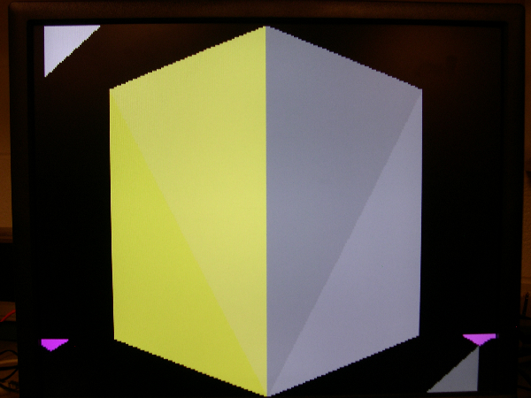
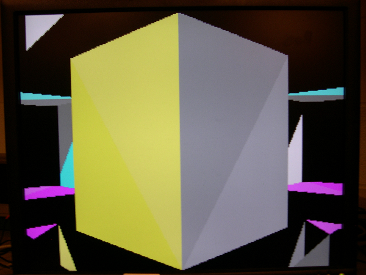
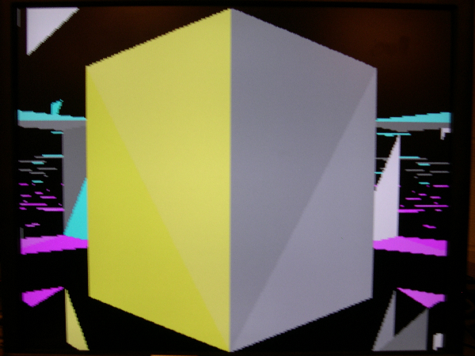
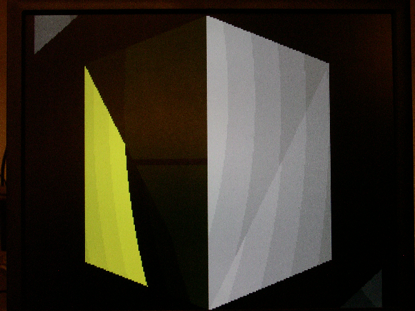

High Speed Hardware Raytracer
Daniel Beer (dbb28), Kashif Javed (kj49)
Pictures

Figure 1: Square with short farthest rendering distance

Figure 2: Longer rendering distance

Figure 3: Longest rendering distance. Lots of artifacts showing

Figure 4: With our somewhat flawed shading